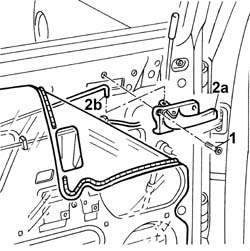

7010C54 rear side door internal opening return mechanism (with handle) - r r for repair or replacement with door panel removed
- Path
- Procedures > 70 FITTINGS > 7010 PASSENGER COMPARTMENT REAR SIDE DOORS > 7010C rear lock controls > 7010C54 rear side door internal opening return mechanism (with handle) - r r for repair or replacement with door panel removed
- Kind
- repair procedure (removal / refitting; the operation number is the code)
- Applies to
- all engines; all production periods
- Interactive page
- https://sloeber94.github.io/elrnDB-a156/en/#/3238652
Applies to: all engines; all production periods
 Removing
Removing
 Refitting
Refitting7010A04 rear side door water guard protection - r r or arrange with door panel removed
1. Undo the bolts.
2. Disconnect the handle (2a) from the rod (2b).

Applies to: all engines; all production periods
Refitting
RemovingCheck that the handle and the control mechanism are undamaged.
Connect the handle to the rod.
Fit the handle and tighten the bolt.
7010A04 rear side door water guard protection - r r or arrange with door panel removed
Test to check the interior handle and catch are working properly.
Topics linked from this page (1)
Topics that link to this page (4)
- 7010C50 rear side door interior opening mechanism-r r for repair or replacement with door panel removed
- 7010C51 rear side door inner catch return device - r+r for repair or replacement
- 7010C55 rear side door interior opening return device (with handle) - r+r for repair or replacement
- 7205E38 Stripping REAR SIDE DOOR